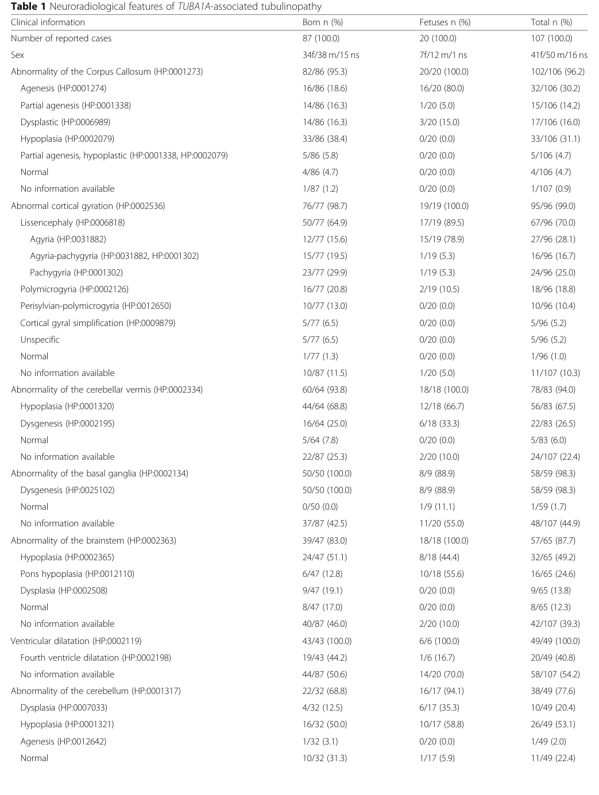

TUBA1A-related tubulinopathy is a malformation of cortical development caused by heterozygous, almost always de novo, missense mutations in TUBA1A, which encodes the brain-predominant alpha-1A tubulin isotype. Alpha- and beta-tubulin heterodimers polymerize into the microtubules that drive interkinetic nuclear migration of progenitors and the nucleokinesis of migrating neurons during corticogenesis. TUBA1A mutations cluster in functionally critical regions of the protein (including the GTP-binding pocket and the surfaces that contact beta-tubulin and microtubule-associated proteins), and they impair tubulin heterodimer formation, microtubule dynamics, and binding of motor and microtubule-associated proteins. The resulting defect in microtubule-dependent neuronal migration produces a coherent but broad alpha-tubulin cortical malformation spectrum: classical lissencephaly and pachygyria, lissencephaly with cerebellar hypoplasia (LCH), microlissencephaly, simplified gyration, and polymicrogyria-like cortical dysplasia, characteristically accompanied by dysmorphic basal ganglia, corpus callosum dysgenesis, and brainstem and cerebellar hypoplasia or dysplasia. Affected individuals typically have severe developmental and motor delay, intellectual disability, drug-resistant epilepsy, and frequently ataxia and ocular impairment. TUBA1A is the most commonly mutated tubulin gene in this group. It is modeled here as its own alpha-tubulin pathomechanism entry rather than lumped under generic lissencephaly or polymicrogyria, while remaining part of the broader tubulinopathy family that includes the beta-tubulin (TUBB2B, TUBB3, TUBB5) and gamma-tubulin (TUBG1) disorders.
Ask a research question about TUBA1A-related Tubulinopathy. OpenScientist will conduct autonomous deep research using the Disorder Mechanisms Knowledge Base and PubMed literature (typically 10-30 minutes).
Do not include personal health information in your question. Questions and results are cached in your browser's local storage.
name: TUBA1A-related Tubulinopathy
creation_date: "2026-06-10T00:00:00Z"
category: Mendelian
disease_term:
preferred_term: lissencephaly due to TUBA1A mutation
term:
id: MONDO:0012703
label: lissencephaly due to TUBA1A mutation
description: >-
TUBA1A-related tubulinopathy is a malformation of cortical development caused
by heterozygous, almost always de novo, missense mutations in TUBA1A, which
encodes the brain-predominant alpha-1A tubulin isotype. Alpha- and beta-tubulin
heterodimers polymerize into the microtubules that drive interkinetic nuclear
migration of progenitors and the nucleokinesis of migrating neurons during
corticogenesis. TUBA1A mutations cluster in functionally critical regions of
the protein (including the GTP-binding pocket and the surfaces that contact
beta-tubulin and microtubule-associated proteins), and they impair tubulin
heterodimer formation, microtubule dynamics, and binding of motor and
microtubule-associated proteins. The resulting defect in microtubule-dependent
neuronal migration produces a coherent but broad alpha-tubulin cortical
malformation spectrum: classical lissencephaly and pachygyria, lissencephaly
with cerebellar hypoplasia (LCH), microlissencephaly, simplified gyration,
and polymicrogyria-like cortical dysplasia, characteristically accompanied by
dysmorphic basal ganglia, corpus callosum dysgenesis, and brainstem and
cerebellar hypoplasia or dysplasia. Affected individuals typically have severe
developmental and motor delay, intellectual disability, drug-resistant
epilepsy, and frequently ataxia and ocular impairment. TUBA1A is the most
commonly mutated tubulin gene in this group. It is modeled here as its own
alpha-tubulin pathomechanism entry rather than lumped under generic
lissencephaly or polymicrogyria, while remaining part of the broader
tubulinopathy family that includes the beta-tubulin (TUBB2B, TUBB3, TUBB5)
and gamma-tubulin (TUBG1) disorders.
parents:
- congenital nervous system disorder
- disorder of development or morphogenesis
- hereditary neurological disease
- neuronal migration disorder
references:
- reference: PMID:17218254
title: "Mutations in alpha-tubulin cause abnormal neuronal migration in mice and lissencephaly in humans."
- reference: PMID:17584854
title: "Large spectrum of lissencephaly and pachygyria phenotypes resulting from de novo missense mutations in tubulin alpha 1A (TUBA1A)."
- reference: PMID:20466733
title: "TUBA1A mutations cause wide spectrum lissencephaly (smooth brain) and suggest that multiple neuronal migration pathways converge on alpha tubulins."
- reference: PMID:24860126
title: "The wide spectrum of tubulinopathies: what are the key features for the diagnosis?"
- reference: PMID:28111201
title: Human iPSC-Derived Cerebral Organoids Model Cellular Features of Lissencephaly and Reveal Prolonged Mitosis of Outer Radial Glia.
pathophysiology:
- name: Altered Alpha-Tubulin (TUBA1A) Function
description: >-
Heterozygous de novo missense mutations in TUBA1A alter the brain-predominant
alpha-1A tubulin subunit. Disease-associated substitutions map to functionally
critical regions of the protein, including the GTP-binding pocket, and impair
tubulin heterodimer formation and microtubule assembly. Additional
mutations disrupt the binding surfaces for microtubule-associated proteins,
so that the alpha-tubulin lesion compromises microtubule structure and the
docking of the regulatory and motor proteins that act on microtubules. This
establishes altered alpha-tubulin function as the initiating molecular lesion
of the malformation.
conforms_to: microtubule_dependent_neuronal_migration_failure#Microtubule Apparatus Perturbation
cell_types:
- preferred_term: cortical progenitor and migrating neuron
term:
id: CL:0000540
label: neuron
biological_processes:
- preferred_term: tubulin heterodimer assembly
term:
id: GO:0007021
label: tubulin complex assembly
modifier: DECREASED
- preferred_term: microtubule cytoskeleton organization
term:
id: GO:0000226
label: microtubule cytoskeleton organization
modifier: DYSREGULATED
- preferred_term: microtubule-based process
term:
id: GO:0007017
label: microtubule-based process
modifier: DYSREGULATED
evidence:
- reference: PMID:17218254
reference_title: "Mutations in alpha-tubulin cause abnormal neuronal migration in mice and lissencephaly in humans."
supports: SUPPORT
evidence_source: IN_VITRO
snippet: >-
the causative mutation lies in the guanosine triphosphate (GTP) binding
pocket of alpha-1 tubulin (Tuba1) and affects tubulin heterodimer
formation
explanation: >-
Identifies the GTP-binding pocket of alpha-1 tubulin as the site of the
causative mutation and shows that it impairs tubulin heterodimer
formation, the molecular lesion underlying TUBA1A disease.
- reference: PMID:20466733
reference_title: "TUBA1A mutations cause wide spectrum lissencephaly (smooth brain) and suggest that multiple neuronal migration pathways converge on alpha tubulins."
supports: SUPPORT
evidence_source: HUMAN_CLINICAL
snippet: >-
Tubulin alpha1A (TUBA1A), encoding a critical structural subunit of
microtubules, has recently been implicated in LIS
explanation: >-
Establishes TUBA1A as encoding a critical structural subunit of
microtubules implicated in lissencephaly.
- reference: PMID:20466733
reference_title: "TUBA1A mutations cause wide spectrum lissencephaly (smooth brain) and suggest that multiple neuronal migration pathways converge on alpha tubulins."
supports: SUPPORT
evidence_source: IN_VITRO
snippet: >-
LIS-associated mutations of TUBA1A operate via diverse mechanisms that
include disruption of binding sites for microtubule-associated proteins
(MAPs)
explanation: >-
Cellular and structural data show that TUBA1A mutations act through
diverse mechanisms including disruption of microtubule-associated protein
binding sites.
downstream:
- target: Impaired Microtubule-Dependent Neuronal Migration
description: >-
Defective alpha-tubulin and microtubule function impairs the
microtubule-dependent nucleokinesis and translocation required for
cortical neuronal migration.
- name: Impaired Microtubule-Dependent Neuronal Migration
description: >-
Microtubules generated from TUBA1A-containing heterodimers drive the
interkinetic nuclear migration of progenitors and the nucleokinesis of
migrating neurons. Because TUBA1A is expressed at high levels throughout
central nervous system development, the alpha-tubulin defect impairs
microtubule-dependent neuronal migration. The phenotype recapitulates that
of Doublecortin (DCX) and LIS1 deficiency, reflecting the functional
importance of the microtubule/DCX migration machinery on which the
alpha-tubulin lesion converges.
conforms_to: microtubule_dependent_neuronal_migration_failure#Microtubule-Based Neuronal Motility Failure
cell_types:
- preferred_term: migrating cortical neuron
term:
id: CL:0000540
label: neuron
biological_processes:
- preferred_term: neuron migration
term:
id: GO:0001764
label: neuron migration
modifier: DECREASED
- preferred_term: microtubule-based movement
term:
id: GO:0007018
label: microtubule-based movement
modifier: DYSREGULATED
evidence:
- reference: PMID:17218254
reference_title: "Mutations in alpha-tubulin cause abnormal neuronal migration in mice and lissencephaly in humans."
supports: SUPPORT
evidence_source: MODEL_ORGANISM
snippet: >-
abnormalities in the laminar architecture of the hippocampus and cortex,
accompanied by impaired neuronal migration
explanation: >-
The ENU-induced alpha-tubulin mouse mutant shows impaired neuronal
migration with abnormal hippocampal and cortical lamination, the model
phenotype that prompted screening of human migration disorders.
- reference: PMID:17584854
reference_title: "Large spectrum of lissencephaly and pachygyria phenotypes resulting from de novo missense mutations in tubulin alpha 1A (TUBA1A)."
supports: SUPPORT
evidence_source: HUMAN_CLINICAL
snippet: >-
highlight the importance of the MTs/DCX complex in the neuronal migration
process
explanation: >-
Frames TUBA1A disease within the microtubule/DCX migration machinery,
consistent with impaired microtubule-dependent neuronal migration as the
core mechanism.
downstream:
- target: Cortical Dyslamination and Lissencephaly Spectrum
description: >-
Failed neuronal migration leaves neurons mispositioned, producing the
smooth or abnormally folded, abnormally laminated cortex of the
malformation spectrum.
- name: Cortical Dyslamination and Lissencephaly Spectrum
description: >-
Impaired migration of cortical neurons disrupts the normal six-layered
architecture of the neocortex, producing a coherent but broad alpha-tubulin
malformation spectrum that ranges from microlissencephaly and classical
lissencephaly through pachygyria and simplified gyration to
polymicrogyria-like cortical dysplasia. The malformation is characteristically
accompanied by dysmorphic basal ganglia, corpus callosum dysgenesis, and
cerebellar and brainstem hypoplasia or dysplasia, reflecting the shared
requirement for microtubule function across these developing structures.
conforms_to: microtubule_dependent_neuronal_migration_failure#Cortical Dyslamination and Neuronal Ectopia
cell_types:
- preferred_term: cortical neuron
term:
id: CL:0000540
label: neuron
biological_processes:
- preferred_term: cerebral cortex development
term:
id: GO:0021987
label: cerebral cortex development
modifier: DYSREGULATED
- preferred_term: neuron migration
term:
id: GO:0001764
label: neuron migration
modifier: DECREASED
evidence:
- reference: PMID:24860126
reference_title: "The wide spectrum of tubulinopathies: what are the key features for the diagnosis?"
supports: SUPPORT
evidence_source: HUMAN_CLINICAL
snippet: >-
commonly referred to as tubulinopathies, are a heterogeneous group of
conditions with a wide spectrum of clinical severity
explanation: >-
Establishes the tubulinopathies, including TUBA1A, as a heterogeneous
group of cortical malformation conditions with a wide spectrum of
severity.
- reference: PMID:24860126
reference_title: "The wide spectrum of tubulinopathies: what are the key features for the diagnosis?"
supports: SUPPORT
evidence_source: HUMAN_CLINICAL
snippet: >-
The core phenotype of TUBA1A and TUBG1 tubulinopathies are
lissencephalies and microlissencephalies
explanation: >-
Identifies lissencephaly and microlissencephaly as the core cortical
malformation phenotype of TUBA1A tubulinopathy.
- reference: PMID:20466733
reference_title: "TUBA1A mutations cause wide spectrum lissencephaly (smooth brain) and suggest that multiple neuronal migration pathways converge on alpha tubulins."
supports: SUPPORT
evidence_source: HUMAN_CLINICAL
snippet: >-
We identified novel and recurrent TUBA1A mutations in approximately 1% of
children with classic LIS and in approximately 30% of children with LCH,
making this the first major gene associated with the rare LCH phenotype
explanation: >-
Quantifies the contribution of TUBA1A mutations to classic lissencephaly
and to lissencephaly with cerebellar hypoplasia, defining the breadth of
the cortical dyslamination spectrum.
phenotypes:
- name: Lissencephaly
description: >-
Smooth brain (agyria/pachygyria) from arrested neuronal migration is the
core cortical malformation of TUBA1A tubulinopathy, ranging to
microlissencephaly at the severe end of the spectrum.
phenotype_term:
preferred_term: Lissencephaly
term:
id: HP:0001339
label: Lissencephaly
evidence:
- reference: PMID:24860126
reference_title: "The wide spectrum of tubulinopathies: what are the key features for the diagnosis?"
supports: SUPPORT
evidence_source: HUMAN_CLINICAL
snippet: >-
The core phenotype of TUBA1A and TUBG1 tubulinopathies are
lissencephalies and microlissencephalies
explanation: >-
Identifies lissencephaly/microlissencephaly as the core phenotype of
TUBA1A tubulinopathy.
- reference: PMID:20466733
reference_title: "TUBA1A mutations cause wide spectrum lissencephaly (smooth brain) and suggest that multiple neuronal migration pathways converge on alpha tubulins."
supports: SUPPORT
evidence_source: HUMAN_CLINICAL
snippet: >-
We identified novel and recurrent TUBA1A mutations in approximately 1% of
children with classic LIS and in approximately 30% of children with LCH
explanation: >-
Documents TUBA1A mutations in classic lissencephaly and in lissencephaly
with cerebellar hypoplasia cohorts.
- name: Pachygyria
description: >-
Abnormally broad, thick gyri with shallow sulci are part of the TUBA1A
cortical dysgenesis spectrum, intermediate between agyria and normal
gyration.
phenotype_term:
preferred_term: Pachygyria
term:
id: HP:0001302
label: Pachygyria
evidence:
- reference: PMID:17584854
reference_title: "Large spectrum of lissencephaly and pachygyria phenotypes resulting from de novo missense mutations in tubulin alpha 1A (TUBA1A)."
supports: SUPPORT
evidence_source: HUMAN_CLINICAL
snippet: >-
the identification of TUBA1A mutations in two patients with lissencephaly
and pachygyria, respectively
explanation: >-
Documents pachygyria as part of the TUBA1A cortical malformation
spectrum.
- name: Cerebellar Hypoplasia
description: >-
A disproportionately small cerebellum, frequently with cerebellar dysplasia,
is a characteristic accompaniment of TUBA1A lissencephaly and defines the
lissencephaly-with-cerebellar-hypoplasia (LCH) subgroup.
phenotype_term:
preferred_term: Cerebellar hypoplasia
term:
id: HP:0001321
label: Cerebellar hypoplasia
evidence:
- reference: PMID:24860126
reference_title: "The wide spectrum of tubulinopathies: what are the key features for the diagnosis?"
supports: SUPPORT
evidence_source: HUMAN_CLINICAL
snippet: >-
mild to severe cerebellar hypoplasia and dysplasia (63/80; 78.7%)
explanation: >-
Documents cerebellar hypoplasia and dysplasia in the great majority of
tubulinopathy patients.
- reference: PMID:20466733
reference_title: "TUBA1A mutations cause wide spectrum lissencephaly (smooth brain) and suggest that multiple neuronal migration pathways converge on alpha tubulins."
supports: SUPPORT
evidence_source: HUMAN_CLINICAL
snippet: >-
in approximately 30% of children with LCH, making this the first major
gene associated with the rare LCH phenotype
explanation: >-
Establishes TUBA1A as the first major gene of lissencephaly with
cerebellar hypoplasia, linking the gene to the cerebellar phenotype.
- name: Agenesis of the Corpus Callosum
description: >-
Partial or complete corpus callosum dysgenesis is a frequent commissural
abnormality in TUBA1A tubulinopathy and can occur even without overt
lissencephaly.
phenotype_term:
preferred_term: Agenesis of corpus callosum
term:
id: HP:0001274
label: Agenesis of corpus callosum
evidence:
- reference: PMID:24860126
reference_title: "The wide spectrum of tubulinopathies: what are the key features for the diagnosis?"
supports: SUPPORT
evidence_source: HUMAN_CLINICAL
snippet: >-
high prevalence of corpus callosum agenesis (32/80; 40%)
explanation: >-
Documents corpus callosum agenesis in a high proportion of tubulinopathy
patients.
- reference: PMID:20466733
reference_title: "TUBA1A mutations cause wide spectrum lissencephaly (smooth brain) and suggest that multiple neuronal migration pathways converge on alpha tubulins."
supports: SUPPORT
evidence_source: HUMAN_CLINICAL
snippet: >-
a TUBA1A mutation in one child with agenesis of the corpus callosum and
cerebellar hypoplasia without LIS
explanation: >-
Documents corpus callosum agenesis with cerebellar hypoplasia as a TUBA1A
phenotype that can occur in the absence of lissencephaly.
- name: Dysmorphic Basal Ganglia
description: >-
Dysmorphic basal ganglia, reflecting impaired migration and morphogenesis of
the deep grey nuclei, are a characteristic and highly prevalent imaging
hallmark of the tubulinopathies including TUBA1A.
phenotype_term:
preferred_term: Abnormal basal ganglia morphology
term:
id: HP:0002134
label: Abnormal basal ganglia morphology
evidence:
- reference: PMID:24860126
reference_title: "The wide spectrum of tubulinopathies: what are the key features for the diagnosis?"
supports: SUPPORT
evidence_source: HUMAN_CLINICAL
snippet: >-
Dysmorphic basal ganglia are the hallmark of tubulinopathies (found in
75% of cases)
explanation: >-
Establishes dysmorphic basal ganglia as the imaging hallmark of
tubulinopathies, present in the majority of cases.
- name: Brainstem Abnormalities
description: >-
Brainstem hypoplasia or dysplasia accompanies the cortical malformation,
part of the infratentorial involvement characteristic of TUBA1A
tubulinopathy.
phenotype_term:
preferred_term: Abnormal brainstem morphology
term:
id: HP:0002363
label: Abnormal brainstem morphology
evidence:
- reference: PMID:17584854
reference_title: "Large spectrum of lissencephaly and pachygyria phenotypes resulting from de novo missense mutations in tubulin alpha 1A (TUBA1A)."
supports: SUPPORT
evidence_source: HUMAN_CLINICAL
snippet: >-
patients with TUBA1A mutations share not only cortical dysgenesis, but
also cerebellar, hippocampal, corpus callosum, and brainstem
abnormalities
explanation: >-
Documents brainstem (and cerebellar, hippocampal, callosal) abnormalities
as shared features of patients with TUBA1A mutations.
genetic:
- name: TUBA1A
association: Causative
gene_term:
preferred_term: TUBA1A (alpha-1A tubulin)
term:
id: hgnc:20766
label: TUBA1A
evidence:
- reference: PMID:17218254
reference_title: "Mutations in alpha-tubulin cause abnormal neuronal migration in mice and lissencephaly in humans."
supports: SUPPORT
evidence_source: HUMAN_CLINICAL
snippet: >-
We identified two patients with de novo mutations in TUBA3, the human
homolog of Tuba1
explanation: >-
Founding report identifying de novo alpha-tubulin (TUBA1A, then named
TUBA3) mutations as a cause of human lissencephaly.
- reference: PMID:17584854
reference_title: "Large spectrum of lissencephaly and pachygyria phenotypes resulting from de novo missense mutations in tubulin alpha 1A (TUBA1A)."
supports: SUPPORT
evidence_source: HUMAN_CLINICAL
snippet: >-
The de novo occurrence was shown for all mutations
explanation: >-
Confirms the de novo occurrence of TUBA1A mutations, consistent with a
dominant, typically sporadic mechanism.
- reference: PMID:24860126
reference_title: "The wide spectrum of tubulinopathies: what are the key features for the diagnosis?"
supports: SUPPORT
evidence_source: HUMAN_CLINICAL
snippet: >-
45 were found to carry mutations in TUBA1A (42.5%)
explanation: >-
Establishes TUBA1A as the most commonly mutated tubulin gene among
patients with complex cortical malformations.
treatments:
- name: Anti-Seizure Medication
description: >-
Symptomatic management of the frequently drug-resistant epilepsy associated
with TUBA1A tubulinopathy using standard anti-seizure medications selected by
seizure type. No disease-modifying therapy exists; management is supportive.
treatment_term:
preferred_term: pharmacotherapy
term:
id: NCIT:C15986
label: Pharmacotherapy
- name: Supportive and Rehabilitative Care
description: >-
Multidisciplinary supportive care including physical, occupational and
developmental therapies for the severe motor and intellectual impairment.
treatment_term:
preferred_term: supportive care
term:
id: MAXO:0000950
label: supportive care
- name: Genetic Counseling
description: >-
Genetic counseling for families, noting that TUBA1A mutations are almost
always de novo with low recurrence risk, while germline mosaicism can
occasionally cause recurrence.
treatment_term:
preferred_term: genetic counseling
term:
id: MAXO:0000079
label: genetic counseling
discussions:
- discussion_id: gap_tuba1a_human_organoid_translatability
prompt: >-
Which TUBA1A variant effects on microtubule heterodimer formation, neuronal
migration, and progenitor behavior are conserved across biochemical or mouse
systems, and which require human iPSC-derived cortical organoids or fetal
tissue benchmarks to resolve?
kind: HUMAN_MODEL_MISMATCH
status: OPEN
attaches_to:
- pathophysiology#Altered Alpha-Tubulin (TUBA1A) Function
- pathophysiology#Impaired Microtubule-Dependent Neuronal Migration
- pathophysiology#Cortical Dyslamination and Lissencephaly Spectrum
rationale: >-
The TUBA1A pathograph is supported by mouse neuronal-migration phenotypes,
human clinical genetics, and cellular/structural assays, but human cortical
expansion depends on outer radial glia and fetal cortical organization that
are not fully represented in lissencephalic rodents. A TUBA1A-specific
new-approach-model experiment is needed to test whether the alpha-tubulin
mechanism is purely post-mitotic neuronal motility failure or also includes
human progenitor and outer-radial-glia vulnerability.
evidence:
- reference: PMID:17218254
reference_title: "Mutations in alpha-tubulin cause abnormal neuronal migration in mice and lissencephaly in humans."
supports: SUPPORT
evidence_source: OTHER
snippet: >-
Phenotypic similarity with existing mouse models of lissencephaly led us
to screen a cohort of patients with developmental brain anomalies.
explanation: >-
The founding TUBA1A paper explicitly moves from a mouse migration model to
human patient screening, making model-to-human translatability part of the
evidentiary bridge.
- reference: PMID:28111201
reference_title: Human iPSC-Derived Cerebral Organoids Model Cellular Features of Lissencephaly and Reveal Prolonged Mitosis of Outer Radial Glia.
supports: SUPPORT
evidence_source: OTHER
snippet: >-
However, the mouse brain is naturally lissencephalic, suggesting that
certain aspects of cortical development may not be adequately assessed in
mice.
explanation: >-
Supports treating rodent-to-human translation as an explicit knowledge gap
for lissencephaly mechanisms.
- reference: PMID:28111201
reference_title: Human iPSC-Derived Cerebral Organoids Model Cellular Features of Lissencephaly and Reveal Prolonged Mitosis of Outer Radial Glia.
supports: SUPPORT
evidence_source: IN_VITRO
snippet: >-
We saw a cell migration defect that was rescued when we corrected the MDS
causative chromosomal deletion
explanation: >-
Provides precedent that human iPSC-derived cerebral organoids can measure
and rescue a lissencephaly-relevant migration defect.
proposed_experiments:
- experiment_id: exp_tuba1a_isogenic_cortical_organoid_migration
name: TUBA1A isogenic cortical-organoid migration experiment
description: >-
Engineer recurrent TUBA1A missense variants into human iPSCs, correct
patient-derived variants isogenically where available, and compare
cortical organoid neuronal migration, radial-glial organization,
microtubule dynamics, and outer-radial-glia mitosis against mouse and
biochemical expectations.
experiment_type:
preferred_term: patient-derived cortical organoid perturbation experiment
model_systems:
- name: TUBA1A human iPSC-derived cortical organoid
description: >-
Three-dimensional human cortical organoid carrying a pathogenic TUBA1A
variant, with isogenic corrected and knock-in controls.
experimental_model_type: ORGANOID
namo_type: namo:Organoid
organism:
preferred_term: human
term:
id: NCBITaxon:9606
label: Homo sapiens
tissue_term:
preferred_term: cerebral cortex
term:
id: UBERON:0000956
label: cerebral cortex
cell_types:
- preferred_term: radial glial cell
term:
id: CL:0000681
label: radial glial cell
- preferred_term: migrating cortical neuron
term:
id: CL:0000540
label: neuron
conditions:
- TUBA1A-related tubulinopathy
- lissencephaly
- microtubule-dependent neuronal migration failure
cell_source: Patient-derived or CRISPR-engineered human induced pluripotent stem cells
culture_system: Three-dimensional cortical organoid with live-imaging migration assays
perturbations:
- name: TUBA1A variant correction or knock-in
target: pathophysiology#Altered Alpha-Tubulin (TUBA1A) Function
genes:
- preferred_term: TUBA1A
term:
id: hgnc:20766
label: TUBA1A
description: >-
Correct a patient TUBA1A variant or introduce a recurrent missense
variant into an isogenic human iPSC background.
readouts:
- name: Microtubule apparatus and heterodimer function
target: pathophysiology#Altered Alpha-Tubulin (TUBA1A) Function
biological_processes:
- preferred_term: tubulin complex assembly
term:
id: GO:0007021
label: tubulin complex assembly
modifier: DECREASED
- preferred_term: microtubule cytoskeleton organization
term:
id: GO:0000226
label: microtubule cytoskeleton organization
modifier: DYSREGULATED
assays:
- preferred_term: tubulin heterodimer assembly assay
- preferred_term: microtubule polymerization assay
direction: NEGATIVE
- name: Live-imaging cortical neuron migration
target: pathophysiology#Impaired Microtubule-Dependent Neuronal Migration
biological_processes:
- preferred_term: neuron migration
term:
id: GO:0001764
label: neuron migration
modifier: DECREASED
assays:
- preferred_term: live-cell imaging assay
direction: NEGATIVE
- name: Outer radial glial mitotic behavior
target: pathophysiology#Altered Alpha-Tubulin (TUBA1A) Function
biological_processes:
- preferred_term: neurogenesis
term:
id: GO:0022008
label: neurogenesis
modifier: DYSREGULATED
assays:
- preferred_term: time-lapse microscopy
- preferred_term: single-cell transcriptomic profiling
direction: POSITIVE
controls:
- name: Isogenic corrected organoids
description: Variant-corrected patient-derived organoids differentiated in parallel.
- name: Isogenic knock-in organoids
description: Wild-type-background organoids carrying the introduced TUBA1A variant.
decision_criterion: >-
A conserved TUBA1A microtubule-migration skeleton is strengthened if
mutant organoids reproduce reduced migration and microtubule defects that
are rescued by correction and reproduced by knock-in. A subtype-specific
human branch is supported if organoids reveal outer-radial-glia mitotic or
progenitor-output defects not predicted by mouse migration models alone.
would_support:
- pathophysiology#Altered Alpha-Tubulin (TUBA1A) Function
- pathophysiology#Impaired Microtubule-Dependent Neuronal Migration
- pathophysiology#Cortical Dyslamination and Lissencephaly Spectrum
notes: >-
Entry created from cortical-malformation epic 4098 (issue 4083), seeded from
Romero, Bahi-Buisson & Francis 2018 (Sem Cell Dev Biol 76:33-75). Modeled as a
coherent alpha-tubulin (TUBA1A) microtubule-dependent neuronal migration
pathomechanism rather than lumped under generic lissencephaly or
polymicrogyria, per the epic's mechanism-skeleton entry-boundary rule. TUBA1A
is deliberately split from the beta-tubulin (TUBB2B/TUBB3/TUBB5) and
gamma-tubulin (TUBG1) tubulinopathies because the alpha-tubulin
genotype-phenotype pattern (lissencephaly/microlissencephaly core) is distinct,
while all share the tubulin/microtubule skeleton. Clinical features that are
well established but not given a quotable abstract snippet in the cited
cohort/mechanistic papers — severe intellectual disability, motor delay,
drug-resistant epilepsy, ataxia, and ocular impairment — are summarized in the
description rather than asserted as evidenced phenotypes, pending sources with
exact quotable text. The three core nodes now conform to the
microtubule-dependent neuronal migration module while retaining this entry's
TUBA1A-specific alpha-tubulin molecular trigger and lissencephaly with
cerebellar hypoplasia phenotype emphasis.
Question: You are an expert researcher providing comprehensive, well-cited information.
Provide detailed information focusing on: 1. Key concepts and definitions with current understanding 2. Recent developments and latest research (prioritize 2023-2024 sources) 3. Current applications and real-world implementations 4. Expert opinions and analysis from authoritative sources 5. Relevant statistics and data from recent studies
Format as a comprehensive research report with proper citations. Include URLs and publication dates where available. Always prioritize recent, authoritative sources and provide specific citations for all major claims.
Please provide a comprehensive research report on TUBA1A-related Tubulinopathy covering all of the disease characteristics listed below. This report will be used to populate a disease knowledge base entry. Be thorough and cite primary literature (PMID preferred) for all claims.
For each section, suggested databases/resources are listed. These are the first places you should search for information on each topic.
Search first: OMIM, Orphanet, ICD-10/ICD-11, MeSH, PubMed
Search first: PubMed, Cochrane Library, UpToDate, clinical guidelines, ClinVar, ClinGen, GWAS Catalog, PheGenI, CTD, CDC, WHO, epidemiological databases
Search first: PubMed, Cochrane Library, clinical trial databases, GWAS Catalog, gnomAD, WHO, CDC, nutrition databases
Search first: CTD, PubMed, PheGenI, GxE databases
Search first: HPO (Human Phenotype Ontology), OMIM, Orphanet, PubMed, clinicaltrials.gov, MedDRA, SNOMED CT, DECIPHER, LOINC
For each phenotype, provide: - Phenotype type: symptoms, clinical signs, physical manifestations, behavioral changes, or laboratory abnormalities
For symptoms/signs: HPO, OMIM, Orphanet, PubMed For behavioral changes: HPO, DSM, RDoC (Research Domain Criteria), PubMed For laboratory abnormalities: LOINC, SNOMED CT, LabTests Online, PubMed - Phenotype characteristics: Search first: OMIM, Orphanet, HPO, PubMed - Age of symptom onset (neonatal, childhood, adult-onset, late-onset) - Symptom severity (mild, moderate, severe, variable) - Symptom progression (stable, progressive, episodic, fluctuating) - Frequency among affected individuals (percentage or qualitative) - Quality of life impact: Effects on daily functioning and well-being (per-phenotype when possible) Search first: EQ-5D database, SF-36, WHO QOL databases, PubMed - Suggest HPO (Human Phenotype Ontology) terms for each phenotype
Search first: OMIM, ClinVar, HGMD, Ensembl, NCBI Gene
Search first: ENCODE, Roadmap Epigenomics, MethBase, DiseaseMeth
Search first: DECIPHER, ClinVar, ECARUCA, UCSC Genome Browser
Search first: CTD (Comparative Toxicogenomics Database), TOXNET, PubMed, EPA databases
Search first: CDC databases, WHO, PubMed, NHANES
Search first: NCBI Taxonomy, ViPR, BV-BRC, MicrobeDB, GIDEON
Search first: KEGG, Reactome, WikiPathways, PathBank, BioCyc
Search first: Gene Ontology (GO), Reactome, KEGG, PubMed
Search first: UniProt, PDB (Protein Data Bank), InterPro, Pfam, AlphaFold
Search first: KEGG, BioCyc, HMDB (Human Metabolome Database), BRENDA
Search first: ImmPort, Immunome Database, IEDB, Gene Ontology
Search first: PubMed, Gene Ontology, Reactome
Search first: BRENDA, UniProt, KEGG, OMIM, PubMed
Search first: ENCODE, Roadmap Epigenomics, MethBase, DiseaseMeth
For each mechanism, describe: - The causal chain from initial trigger to clinical manifestation - Which mechanisms are upstream vs downstream - What cell types and biological processes are involved - Suggest GO terms for biological processes and CL terms for cell types
Search first: Uberon, FMA (Foundational Model of Anatomy), OMIM, HPO, ICD-11, MeSH, SNOMED CT
Search first: Uberon, Human Protein Atlas, Cell Ontology, Human Cell Atlas, CellMarker, PanglaoDB
Search first: Gene Ontology (Cellular Component), UniProt, Human Protein Atlas
Search first: OMIM, Orphanet, HPO, PubMed
Search first: Disease registries, longitudinal cohort databases, natural history studies, PubMed, Orphanet, OMIM
Search first: Orphanet, CDC, WHO, GBD (Global Burden of Disease), national registries, SEER, disease registries
Search first: GTR (Genetic Testing Registry), GeneReviews, ClinGen
For each treatment, suggest MAXO (Medical Action Ontology) terms where applicable.
Search first: CDC vaccine schedules, WHO immunization, FDA vaccine database
Search first: CDC, WHO, behavioral intervention databases, Cochrane Library
Search first: NSGC resources, ACMG guidelines, GeneReviews
Search first: Clinical guidelines, FDA approvals, PubMed
Search first: NCBI Taxonomy
Search first: VBO (Vertebrate Breed Ontology)
Search first: NCBI Gene
Structure your response as a comprehensive narrative organized by the sections above. For each section, provide: - Factual content with specific details (numbers, percentages, gene names, variant nomenclature) - Ontology term suggestions (HPO, GO, CL, UBERON, CHEBI, MAXO, MONDO) where applicable - Evidence citations with PMIDs - Direct quotes from abstracts to support key claims - Clear indication when information is not available or not applicable for this disease
This report will be used to populate a disease knowledge base entry with: - Pathophysiology descriptions with causal chains - Gene/protein annotations (HGNC, GO terms) - Phenotype associations (HP terms) with frequencies - Cell type involvement (CL terms) - Anatomical locations (UBERON terms) - Chemical entities (CHEBI terms) - Treatment annotations (MAXO terms) - Evidence items with PMIDs and exact abstract quotes - Epidemiology, prognosis, diagnostic, and prevention information - Animal model descriptions with phenotype recapitulation details
TUBA1A-related tubulinopathy is an autosomal-dominant neurodevelopmental disorder caused predominantly by heterozygous (usually de novo) TUBA1A missense variants that disrupt microtubule function during cortical development, leading to malformations of cortical development (MCD) such as lissencephaly/pachygyria, polymicrogyria-like dysgenesis, and associated abnormalities of the corpus callosum, basal ganglia, cerebellum/brainstem, and ventricles, with frequent global developmental delay and epilepsy. Large aggregated analyses (166 individuals) and more recent phenotype-deep cohorts (10 individuals with detailed epilepsy phenotyping) provide quantitative phenotype frequencies and expanding genotype–phenotype correlations, while real-world genomic testing cohorts show high diagnostic yield for “tubulinopathy” imaging patterns and prominent contribution from TUBA1A. (hebebrand2019themutationaland pages 1-2, hebebrand2019themutationaland pages 2-3, kooshavar2024diagnosticutilityof pages 4-5, schroter2022complementingthephenotypical pages 1-2)
| Study (year, journal) | Cohort | Key phenotype stats | Variant/genetic stats | Diagnostic/testing stats | URL/DOI |
|---|---|---|---|---|---|
| Hebebrand et al. 2019, Orphanet Journal of Rare Diseases | 166 affected individuals total (146 born, 20 fetuses); HPO-standardized clinical data available for 107 cases | Developmental delay 98.1% (52/53); corpus callosum anomalies 96.2% (102/106); microcephaly 76.0% (57/75); lissencephaly/agyria-pachygyria 70.0% (67/96) (hebebrand2019themutationaland pages 1-2, hebebrand2019themutationaland pages 2-3, hebebrand2019themutationaland media ec7b3e06) | 121 distinct TUBA1A variants identified, including 15 recurrent variants; missense variants clustered in the C-terminal region; Arg402 was the most commonly affected residue (13.3% of cases/variants reviewed) (hebebrand2019themutationaland pages 1-2, hebebrand2019themutationaland pages 5-6) | Exome sequencing identified heterozygous de novo missense variants in new cases; study also curated ClinVar/DECIPHER/denovo-db and applied ACMG-style interpretation workflows (hebebrand2019themutationaland pages 1-2, hebebrand2019themutationaland pages 2-3) | https://doi.org/10.1186/s13023-019-1020-x |
| Schröter et al. 2022, European Journal of Human Genetics | 10 unrelated individuals (8 living; 2 terminated pregnancies) | Epilepsy 75% (6/8); infantile onset among epilepsies 83%; refractory epilepsy 50%; global developmental delay 63%; severe motor impairment/tetraparesis 50% (schroter2022complementingthephenotypical pages 1-2, schroter2022complementingthephenotypical pages 2-3) | 9 missense variants reported (4 novel, 5 previously published); hotspot residues Arg264/Arg402/Arg422 together accounted for 55% of reported cases in the broader literature summarized by the authors (N=57) (schroter2022complementingthephenotypical pages 6-7, schroter2022complementingthephenotypical pages 5-6) | Systematic MRI re-evaluation plus protein-structure/prediction modeling; all reported MRIs abnormal; study emphasizes TUBA1A as a cause of congenital brain malformation with early-onset epilepsy (schroter2022complementingthephenotypical pages 2-3, schroter2022complementingthephenotypical pages 1-2, schroter2022complementingthephenotypical pages 7-8) | https://doi.org/10.1038/s41431-021-01027-0 |
| Kooshavar et al. 2024, Brain Communications | 102 children with brain malformations in the Australian Genomics Brain Malformation Flagship; tubulinopathy subgroup n=10 | Tubulinopathy represented ~10% of the imaged/sequenced cohort; mean age at ES 5.4 years (kooshavar2024diagnosticutilityof pages 1-3, kooshavar2024diagnosticutilityof pages 3-4) | TUBA1A was the most frequent genetic diagnosis; 8/37 diagnoses from clinical singleton ES were TUBA1A (22% of solved clinical ES cases) (kooshavar2024diagnosticutilityof pages 1-3, kooshavar2024diagnosticutilityof pages 4-5) | Clinical singleton exome sequencing yield 36% (37/102), rising to 43% (44/102) after research reanalysis; tubulinopathy subgroup yield 90% (9/10); workflow included mandatory CMA first and phenotype-guided ES/reanalysis (kooshavar2024diagnosticutilityof pages 1-3, kooshavar2024diagnosticutilityof pages 5-6, kooshavar2024diagnosticutilityof pages 4-5, kooshavar2024diagnosticutilityof pages 3-4) | https://doi.org/10.1093/braincomms/fcae056 |
Table: This table compiles the most clinically actionable quantitative findings from key TUBA1A-related tubulinopathy studies, including phenotype frequencies, variant hotspots, and real-world exome sequencing performance. It is useful for rapid knowledge-base curation and evidence-backed clinical summary.
“TUBA1A-associated tubulinopathy” is described as clinically heterogeneous, with principal manifestations including “brain malformations, microcephaly, developmental delay and epilepsy.” (hebebrand2019themutationaland pages 1-2)
Recent clinical reviews emphasize that tubulinopathies are disorders of microtubule proteins critical for mitosis and neuronal migration; TUBA1A is commonly highlighted as the most frequently implicated tubulin gene with severe neurological manifestations and complex cortical/subcortical malformations. (pavone2023casereportstructural pages 1-2)
Not available in retrieved texts: MONDO ID, Orphanet ID, ICD-10/ICD-11 codes, and MeSH term(s). These typically require direct querying of curated ontology/clinical coding databases (e.g., Orphanet/MONDO/ICD browsers), which were not retrievable from the current document set.
The current synthesis is derived primarily from: - Aggregated disease-level evidence compiled from published cases (systematic HPO standardization across studies). (hebebrand2019themutationaland pages 1-2, hebebrand2019themutationaland pages 2-3) - More recent multicenter case series with systematic MRI re-evaluation and seizure phenotyping. (schroter2022complementingthephenotypical pages 1-2) - Real-world diagnostic cohort data from clinical exome sequencing pipelines with research reanalysis. (kooshavar2024diagnosticutilityof pages 4-5)
Primary cause: heterozygous pathogenic variants in TUBA1A leading to impaired microtubule function during brain development. TUBA1A-associated tubulinopathy is described as “an autosomal dominant disorder mostly caused by de novo variants in TUBA1A.” (hebebrand2019themutationaland pages 1-2)
No specific environmental risk factors were identified in the retrieved disease-focused literature. TUBA1A-related tubulinopathy is primarily a monogenic developmental disorder; any gene–environment contributors to severity (e.g., prenatal exposures) are not established in the cited evidence.
No protective genetic or environmental factors were identified in the retrieved evidence set.
No gene–environment interaction evidence specific to TUBA1A-related tubulinopathy was identified in the retrieved texts.
Largest standardized review (166 individuals; HPO standardized): - Developmental delay: 98% (hebebrand2019themutationaland pages 1-2) - Corpus callosum anomalies: 96% (hebebrand2019themutationaland pages 1-2) - Microcephaly: 76% (hebebrand2019themutationaland pages 1-2) - Lissencephaly (agyria–pachygyria): 70% (hebebrand2019themutationaland pages 1-2)
These frequencies are also captured in the paper’s summary tables (image-extracted table regions). (hebebrand2019themutationaland media ec7b3e06, hebebrand2019themutationaland media f96aba65, hebebrand2019themutationaland media 2322f156)
Detailed epilepsy-focused cohort (10 individuals; 8 living): - “Epilepsy was observed in 75% of the cases, which showed infantile onset in 83% and a refractory course in 50%.” (schroter2022complementingthephenotypical pages 1-2) - “Global developmental delay and severe motor impairment with tetraparesis was present in 63% and 50% of the subjects, respectively.” (schroter2022complementingthephenotypical pages 1-2)
High-frequency MRI abnormalities in the large synopsis include corpus callosum abnormality, abnormal cortical gyration/lissencephaly, cerebellar vermis abnormality, basal ganglia dysgenesis, brainstem abnormalities, and ventricular dilatation. (hebebrand2019themutationaland pages 2-3)
The 2022 cohort further emphasizes heterogeneity including “cobblestone lissencephaly and subcortical band heterotopia” and reports hydrocephalus with posterior infarction in two cases. (schroter2022complementingthephenotypical pages 1-2)
A tubulinopathy epilepsy review states epilepsy can be variable but suggests a generally less aggressive treatment stance in some cohorts: “epilepsy in tubulinopathies when present has a favorable evolution over time suggesting a not particularly aggressive therapeutic approach.” (romaniello2019epilepsyintubulinopathy pages 1-3)
In contrast, the 2022 TUBA1A-focused series notes a substantial refractory burden: “Their anti-epileptic treatment is challenging as epilepsy predominantly shows an infantile onset and treatment-resistant course...” (schroter2022complementingthephenotypical pages 1-2)
(These are ontology suggestions for knowledge-base structuring; frequencies vary by cohort.) - Global developmental delay — HP:0001263 - Intellectual disability — HP:0001249 - Microcephaly — HP:0000252 - Seizures — HP:0001250; Infantile-onset seizures — HP:0003593 - Lissencephaly — HP:0001339 - Pachygyria — HP:0001302 - Polymicrogyria — HP:0002126 - Agenesis/dysgenesis of corpus callosum — HP:0001274 - Cerebellar hypoplasia — HP:0001321 - Ventriculomegaly/hydrocephalus — HP:0002119 / HP:0000238 - Spasticity — HP:0001257 - Hypotonia — HP:0001252 - Nystagmus — HP:0000639; Strabismus — HP:0000486
A 2024 report highlights that parental mosaicism can explain sibling recurrence even when parental leukocyte testing is negative and summarizes recurrence-risk estimates tied to variant allele fraction (VAF) in parental blood (≥1% associated with ~24% recurrence risk; >6% up to ~50%). (tang2024parentalmosaicismrather pages 1-2, tang2024parentalmosaicismrather pages 5-7)
Disease-causing variants are typically ultra-rare/absent in population databases in reported cases (e.g., a de novo variant absent in gnomAD; and a 2024 case report noting absence from multiple population datasets). (hebebrand2019themutationaland pages 5-6, saidin2024anovelpathogenic pages 6-8)
No robust environmental or lifestyle contributors are established in the retrieved evidence for TUBA1A-related tubulinopathy.
Upstream event: pathogenic TUBA1A variants alter α/β-tubulin heterodimer behavior and/or microtubule lattice properties. (hoff2022themolecularbiology pages 10-11, hoff2022themolecularbiology pages 11-12)
Cellular consequence: disrupted microtubule dynamics and/or impaired binding/function of microtubule-associated proteins (MAPs) and motors (notably dynein), affecting neuronal migration, neurite outgrowth, and cortical organization. (cushion2023mappingtubulinmutations pages 6-7, zocchi2023decipheringthetubulin pages 19-20)
Tissue-level outcome: malformations of cortical development (lissencephaly/pachygyria, polymicrogyria-like dysgenesis, heterotopia) and associated deep gray matter, commissural, cerebellar/brainstem and ventricular abnormalities. (hebebrand2019themutationaland pages 2-3, schroter2022complementingthephenotypical pages 1-2)
A mechanistic review summarizes that α-tubulin residue R402 is a pathogenic hotspot whose substitutions commonly cause lissencephaly through defective neuronal migration. R402 (with E415) stabilizes a C-terminal hairpin important for MAP binding and also interacts with dynein; R402 substitutions incorporate into microtubules yet impair dynein processivity (yeast models) and cause severe neuronal migration defects with altered microtubule-associated proteome (mouse conditional R402H). (cushion2023mappingtubulinmutations pages 6-7)
Mechanisms appear variant-specific and include: - Dominant “poisoning” / dominant-negative or neomorphic effects after incorporation into microtubules (e.g., R402 mutants impair dynein activity and neuronal migration). (zocchi2023decipheringthetubulin pages 19-20, hoff2022themolecularbiology pages 11-12) - Heterodimer destabilization / reduced incorporation (e.g., N102D prevents incorporation and reduces total α-tubulin; associated with neonatal lethality in model evidence summarized in review). (hoff2022themolecularbiology pages 10-11) - Proteostasis and aggregation phenotypes (2023): a novel p.I384N variant reduced TUBA1A stability and microtubule incorporation and increased aggregation; proteasome inhibition increased mutant tubulin levels and promoted insoluble aggregates, suggesting a mechanistic bridge to neurodegeneration (spastic paraplegia/ataxia phenotype). (zocchi2023novellossof pages 1-2, zocchi2023novellossof pages 8-12)
GO (Biological Process): - Microtubule-based process — GO:0007017 - Microtubule cytoskeleton organization — GO:0000226 - Neuron migration — GO:0001764 - Axon guidance — GO:0007411 - Intracellular transport — GO:0046907
CL (cell types; major implicated populations): - Radial glial cell — CL:0000675 (neuronal migration scaffold; common in MCD mechanism models) - Cortical excitatory neuron — CL:0002600 (or broader cortical neuron terms)
UBERON (anatomy): - Cerebral cortex — UBERON:0000956 - Corpus callosum — UBERON:0002020 - Basal ganglion — UBERON:0002420 - Cerebellum — UBERON:0002037 - Brainstem — UBERON:0002298 - Lateral ventricle — UBERON:0002083
Predominantly central nervous system structures, consistent with TUBA1A’s role in neuronal microtubules: - Cerebral cortex (MCD including lissencephaly/polymicrogyria-like patterns) (hebebrand2019themutationaland pages 2-3, schroter2022complementingthephenotypical pages 1-2) - Corpus callosum anomalies (high frequency in aggregated series) (hebebrand2019themutationaland pages 1-2, hebebrand2019themutationaland media ec7b3e06) - Basal ganglia/internal capsule abnormalities and thalamic abnormalities (hebebrand2019themutationaland pages 2-3, schroter2022complementingthephenotypical pages 1-2) - Cerebellum/vermis and brainstem abnormalities (hebebrand2019themutationaland pages 2-3, schroter2022complementingthephenotypical pages 1-2) - Ventricular dilatation/hydrocephalus (hebebrand2019themutationaland pages 2-3, schroter2022complementingthephenotypical pages 1-2)
Population prevalence/incidence is not established in the retrieved evidence set.
However, multiple sources state that TUBA1A accounts for a measurable fraction of lissencephaly: - “TUBA1A accounts for 4–5% of all lissencephaly cases.” (hebebrand2019themutationaland pages 1-2)
TUBA1A-related disease is typically suspected based on MRI patterns of malformations of cortical development and associated midline/deep gray matter anomalies, followed by genomic testing (often exome sequencing) to identify pathogenic variants. (hebebrand2019themutationaland pages 2-3, schroter2022complementingthephenotypical pages 1-2)
A narrative review recommends screening: individuals with cortical and subcortical anomalies “should be screened also for pathogenic variants in TUBA1A.” (pavone2023casereportstructural pages 1-2)
A 2024 national cohort study of children with brain malformations (Australian Genomics Brain Malformation Flagship; n=102) provides real-world performance data: - Overall diagnostic yield: 36% (37/102) from clinical singleton exome sequencing, rising to 43% (44/102) after research reanalysis. (kooshavar2024diagnosticutilityof pages 1-3, kooshavar2024diagnosticutilityof pages 5-6) - TUBA1A contribution: 8/37 (22%) of clinical singleton-exome diagnoses were due to TUBA1A. (kooshavar2024diagnosticutilityof pages 4-5) - Tubulinopathy subgroup: 9/10 (90%) diagnostic rate via clinical singleton exome sequencing. (kooshavar2024diagnosticutilityof pages 5-6)
The same study documents common implementation steps: mandatory chromosomal microarray prior to exome testing and exclusion of congenital CMV in polymicrogyria cases, underscoring multidisciplinary diagnostic workflows. (kooshavar2024diagnosticutilityof pages 1-3)
In practice, differential diagnosis overlaps with other malformations of cortical development and genetic lissencephalies/tubulinopathies (other tubulin genes), as well as non-genetic causes of polymicrogyria (e.g., congenital CMV, per Kooshavar cohort protocol). (kooshavar2024diagnosticutilityof pages 1-3, pavone2023casereportstructural pages 1-2)
Prognosis is variable and driven by severity of brain malformations and epilepsy burden: - In the epilepsy-focused TUBA1A cohort, severe motor impairment (tetraparesis) occurred in 50%, and epilepsy was refractory in 50% of epilepsy cases, reflecting substantial neurodisability in a sizable subset. (schroter2022complementingthephenotypical pages 1-2) - Some tubulinopathy epilepsy series suggest seizures may improve over time in subsets (“favorable evolution over time”), but this may not generalize to all TUBA1A phenotypes given the treatment-resistant course described in more recent TUBA1A-focused cohorts. (romaniello2019epilepsyintubulinopathy pages 1-3, schroter2022complementingthephenotypical pages 1-2)
No disease-modifying therapies specific to TUBA1A-related tubulinopathy were identified in the retrieved evidence.
Epilepsy: anti-seizure medications are standard, but treatment can be challenging due to early-onset and refractory seizures in many patients. (schroter2022complementingthephenotypical pages 1-2)
Supportive care: disease reviews emphasize broad supportive management (developmental/rehabilitative care) as central, but detailed standardized protocols were not retrievable in the current text set.
A ClinicalTrials.gov search using broad terms (TUBA1A/tubulinopathy/lissencephaly) did not return clearly relevant interventional trials in the retrieved tool output. (kooshavar2024diagnosticutilityof pages 3-4)
Prevention is primarily genetic (reproductive risk management) rather than environmental.
Parental mosaicism is increasingly recognized as a cause of sibling recurrence and changes recurrence-risk counseling. The 2024 report emphasizes offering genetic counseling and prioritizing prenatal diagnosis and/or preimplantation genetic testing (PGT-M) for subsequent pregnancies when mosaicism is suspected. (tang2024parentalmosaicismrather pages 4-5, tang2024parentalmosaicismrather pages 5-7)
No naturally occurring veterinary analogs were identified in the retrieved evidence.
Evidence for models relevant to mechanism and translation includes: - Yeast models of the R402-equivalent mutation demonstrate mutant tubulin incorporation with specific impairment of dynein processivity despite normal recruitment, supporting a dominant mechanism. (cushion2023mappingtubulinmutations pages 6-7) - Mouse models (conditional Tuba1a R402H) show severe neuronal migration defects and altered microtubule-associated proteome composition; neuron culture tracking shows impaired dynein-mediated lysosomal transport. (cushion2023mappingtubulinmutations pages 6-7) - Cellular overexpression systems (HEK-293, COS-1; neural progenitors) were used to demonstrate variant-specific effects on tubulin stability, microtubule incorporation, and aggregation/proteostasis (e.g., p.I384N). (zocchi2023novellossof pages 6-8, zocchi2023novellossof pages 8-12)
Phenotype frequency tables for the large 2019 TUBA1A synopsis (including developmental delay, corpus callosum anomalies, microcephaly, and lissencephaly) were retrieved as cropped table images from the source article. (hebebrand2019themutationaland media ec7b3e06, hebebrand2019themutationaland media f96aba65, hebebrand2019themutationaland media 2322f156)
References
(hebebrand2019themutationaland pages 1-2): Moritz Hebebrand, Ulrike Hüffmeier, Regina Trollmann, Ute Hehr, Steffen Uebe, Arif B. Ekici, Cornelia Kraus, Mandy Krumbiegel, André Reis, Christian T. Thiel, and Bernt Popp. The mutational and phenotypic spectrum of tuba1a-associated tubulinopathy. Orphanet Journal of Rare Diseases, Feb 2019. URL: https://doi.org/10.1186/s13023-019-1020-x, doi:10.1186/s13023-019-1020-x. This article has 100 citations and is from a peer-reviewed journal.
(hebebrand2019themutationaland pages 2-3): Moritz Hebebrand, Ulrike Hüffmeier, Regina Trollmann, Ute Hehr, Steffen Uebe, Arif B. Ekici, Cornelia Kraus, Mandy Krumbiegel, André Reis, Christian T. Thiel, and Bernt Popp. The mutational and phenotypic spectrum of tuba1a-associated tubulinopathy. Orphanet Journal of Rare Diseases, Feb 2019. URL: https://doi.org/10.1186/s13023-019-1020-x, doi:10.1186/s13023-019-1020-x. This article has 100 citations and is from a peer-reviewed journal.
(kooshavar2024diagnosticutilityof pages 4-5): Daniz Kooshavar, David J Amor, Kirsten Boggs, Naomi Baker, Christopher Barnett, Michelle G de Silva, Samantha Edwards, Michael C Fahey, Justine E Marum, Penny Snell, Kiymet Bozaoglu, Kate Pope, Shekeeb S Mohammad, Kate Riney, Rani Sachdev, Ingrid E Scheffer, Sarah Schenscher, John Silberstein, Nicholas Smith, Melanie Tom, Tyson L Ware, Paul J Lockhart, and Richard J Leventer. Diagnostic utility of exome sequencing followed by research reanalysis in human brain malformations. Brain Communications, Feb 2024. URL: https://doi.org/10.1093/braincomms/fcae056, doi:10.1093/braincomms/fcae056. This article has 6 citations and is from a peer-reviewed journal.
(schroter2022complementingthephenotypical pages 1-2): Julian Schröter, Bernt Popp, Heiko Brennenstuhl, Jan H. Döring, Stephany H. Donze, Emilia K. Bijlsma, Arie van Haeringen, Dagmar Huhle, Leonie Jestaedt, Andreas Merkenschlager, Maria Arelin, Daniel Gräfe, Sonja Neuser, Stephanie Oates, Deb K. Pal, Michael J. Parker, Johannes R. Lemke, Georg F. Hoffmann, Stefan Kölker, Inga Harting, and Steffen Syrbe. Complementing the phenotypical spectrum of tuba1a tubulinopathy and its role in early-onset epilepsies. European Journal of Human Genetics, 30:298-306, Jan 2022. URL: https://doi.org/10.1038/s41431-021-01027-0, doi:10.1038/s41431-021-01027-0. This article has 26 citations and is from a domain leading peer-reviewed journal.
(hebebrand2019themutationaland media ec7b3e06): Moritz Hebebrand, Ulrike Hüffmeier, Regina Trollmann, Ute Hehr, Steffen Uebe, Arif B. Ekici, Cornelia Kraus, Mandy Krumbiegel, André Reis, Christian T. Thiel, and Bernt Popp. The mutational and phenotypic spectrum of tuba1a-associated tubulinopathy. Orphanet Journal of Rare Diseases, Feb 2019. URL: https://doi.org/10.1186/s13023-019-1020-x, doi:10.1186/s13023-019-1020-x. This article has 100 citations and is from a peer-reviewed journal.
(hebebrand2019themutationaland pages 5-6): Moritz Hebebrand, Ulrike Hüffmeier, Regina Trollmann, Ute Hehr, Steffen Uebe, Arif B. Ekici, Cornelia Kraus, Mandy Krumbiegel, André Reis, Christian T. Thiel, and Bernt Popp. The mutational and phenotypic spectrum of tuba1a-associated tubulinopathy. Orphanet Journal of Rare Diseases, Feb 2019. URL: https://doi.org/10.1186/s13023-019-1020-x, doi:10.1186/s13023-019-1020-x. This article has 100 citations and is from a peer-reviewed journal.
(schroter2022complementingthephenotypical pages 2-3): Julian Schröter, Bernt Popp, Heiko Brennenstuhl, Jan H. Döring, Stephany H. Donze, Emilia K. Bijlsma, Arie van Haeringen, Dagmar Huhle, Leonie Jestaedt, Andreas Merkenschlager, Maria Arelin, Daniel Gräfe, Sonja Neuser, Stephanie Oates, Deb K. Pal, Michael J. Parker, Johannes R. Lemke, Georg F. Hoffmann, Stefan Kölker, Inga Harting, and Steffen Syrbe. Complementing the phenotypical spectrum of tuba1a tubulinopathy and its role in early-onset epilepsies. European Journal of Human Genetics, 30:298-306, Jan 2022. URL: https://doi.org/10.1038/s41431-021-01027-0, doi:10.1038/s41431-021-01027-0. This article has 26 citations and is from a domain leading peer-reviewed journal.
(schroter2022complementingthephenotypical pages 6-7): Julian Schröter, Bernt Popp, Heiko Brennenstuhl, Jan H. Döring, Stephany H. Donze, Emilia K. Bijlsma, Arie van Haeringen, Dagmar Huhle, Leonie Jestaedt, Andreas Merkenschlager, Maria Arelin, Daniel Gräfe, Sonja Neuser, Stephanie Oates, Deb K. Pal, Michael J. Parker, Johannes R. Lemke, Georg F. Hoffmann, Stefan Kölker, Inga Harting, and Steffen Syrbe. Complementing the phenotypical spectrum of tuba1a tubulinopathy and its role in early-onset epilepsies. European Journal of Human Genetics, 30:298-306, Jan 2022. URL: https://doi.org/10.1038/s41431-021-01027-0, doi:10.1038/s41431-021-01027-0. This article has 26 citations and is from a domain leading peer-reviewed journal.
(schroter2022complementingthephenotypical pages 5-6): Julian Schröter, Bernt Popp, Heiko Brennenstuhl, Jan H. Döring, Stephany H. Donze, Emilia K. Bijlsma, Arie van Haeringen, Dagmar Huhle, Leonie Jestaedt, Andreas Merkenschlager, Maria Arelin, Daniel Gräfe, Sonja Neuser, Stephanie Oates, Deb K. Pal, Michael J. Parker, Johannes R. Lemke, Georg F. Hoffmann, Stefan Kölker, Inga Harting, and Steffen Syrbe. Complementing the phenotypical spectrum of tuba1a tubulinopathy and its role in early-onset epilepsies. European Journal of Human Genetics, 30:298-306, Jan 2022. URL: https://doi.org/10.1038/s41431-021-01027-0, doi:10.1038/s41431-021-01027-0. This article has 26 citations and is from a domain leading peer-reviewed journal.
(schroter2022complementingthephenotypical pages 7-8): Julian Schröter, Bernt Popp, Heiko Brennenstuhl, Jan H. Döring, Stephany H. Donze, Emilia K. Bijlsma, Arie van Haeringen, Dagmar Huhle, Leonie Jestaedt, Andreas Merkenschlager, Maria Arelin, Daniel Gräfe, Sonja Neuser, Stephanie Oates, Deb K. Pal, Michael J. Parker, Johannes R. Lemke, Georg F. Hoffmann, Stefan Kölker, Inga Harting, and Steffen Syrbe. Complementing the phenotypical spectrum of tuba1a tubulinopathy and its role in early-onset epilepsies. European Journal of Human Genetics, 30:298-306, Jan 2022. URL: https://doi.org/10.1038/s41431-021-01027-0, doi:10.1038/s41431-021-01027-0. This article has 26 citations and is from a domain leading peer-reviewed journal.
(kooshavar2024diagnosticutilityof pages 1-3): Daniz Kooshavar, David J Amor, Kirsten Boggs, Naomi Baker, Christopher Barnett, Michelle G de Silva, Samantha Edwards, Michael C Fahey, Justine E Marum, Penny Snell, Kiymet Bozaoglu, Kate Pope, Shekeeb S Mohammad, Kate Riney, Rani Sachdev, Ingrid E Scheffer, Sarah Schenscher, John Silberstein, Nicholas Smith, Melanie Tom, Tyson L Ware, Paul J Lockhart, and Richard J Leventer. Diagnostic utility of exome sequencing followed by research reanalysis in human brain malformations. Brain Communications, Feb 2024. URL: https://doi.org/10.1093/braincomms/fcae056, doi:10.1093/braincomms/fcae056. This article has 6 citations and is from a peer-reviewed journal.
(kooshavar2024diagnosticutilityof pages 3-4): Daniz Kooshavar, David J Amor, Kirsten Boggs, Naomi Baker, Christopher Barnett, Michelle G de Silva, Samantha Edwards, Michael C Fahey, Justine E Marum, Penny Snell, Kiymet Bozaoglu, Kate Pope, Shekeeb S Mohammad, Kate Riney, Rani Sachdev, Ingrid E Scheffer, Sarah Schenscher, John Silberstein, Nicholas Smith, Melanie Tom, Tyson L Ware, Paul J Lockhart, and Richard J Leventer. Diagnostic utility of exome sequencing followed by research reanalysis in human brain malformations. Brain Communications, Feb 2024. URL: https://doi.org/10.1093/braincomms/fcae056, doi:10.1093/braincomms/fcae056. This article has 6 citations and is from a peer-reviewed journal.
(kooshavar2024diagnosticutilityof pages 5-6): Daniz Kooshavar, David J Amor, Kirsten Boggs, Naomi Baker, Christopher Barnett, Michelle G de Silva, Samantha Edwards, Michael C Fahey, Justine E Marum, Penny Snell, Kiymet Bozaoglu, Kate Pope, Shekeeb S Mohammad, Kate Riney, Rani Sachdev, Ingrid E Scheffer, Sarah Schenscher, John Silberstein, Nicholas Smith, Melanie Tom, Tyson L Ware, Paul J Lockhart, and Richard J Leventer. Diagnostic utility of exome sequencing followed by research reanalysis in human brain malformations. Brain Communications, Feb 2024. URL: https://doi.org/10.1093/braincomms/fcae056, doi:10.1093/braincomms/fcae056. This article has 6 citations and is from a peer-reviewed journal.
(pavone2023casereportstructural pages 1-2): Piero Pavone, Pasquale Striano, Giovanni Cacciaguerra, Simona Domenica Marino, Enrico Parano, Xena Giada Pappalardo, Raffaele Falsaperla, and Martino Ruggieri. Case report: structural brain abnormalities in tuba1a-tubulinopathies: a narrative review. Frontiers in Pediatrics, Sep 2023. URL: https://doi.org/10.3389/fped.2023.1210272, doi:10.3389/fped.2023.1210272. This article has 7 citations.
(tang2024parentalmosaicismrather pages 1-2): Hai Xuan Tang, Y‐Thanh Lu, Thi Minh Thi Ha, Nhat‐Thang Tran, Doan Minh Dang, Son Xuan Ly, Thu Ha Thi Bui, Son Ta Vo, Minh Doan Thai, Vu Dinh Nguyen, Thong Van Nguyen, Linh Thuy Dinh, Lan‐Anh Thi Luong, Kim‐Phuong Doan, Kim Huong Thi Nguyen, Thanh‐Thuy Thi Do, Dinh‐Kiet Truong, Hoa Giang, Hoai‐Nghia Nguyen, Thu Huong Nhut Trinh, and Hung Sang Tang. Parental mosaicism rather than de novo variants in foxg1 ‐related syndrome and tuba1a ‐associated tubulinopathy: familial case reports. Molecular Genetics & Genomic Medicine, Jun 2024. URL: https://doi.org/10.1002/mgg3.2484, doi:10.1002/mgg3.2484. This article has 0 citations and is from a peer-reviewed journal.
(hebebrand2019themutationaland media f96aba65): Moritz Hebebrand, Ulrike Hüffmeier, Regina Trollmann, Ute Hehr, Steffen Uebe, Arif B. Ekici, Cornelia Kraus, Mandy Krumbiegel, André Reis, Christian T. Thiel, and Bernt Popp. The mutational and phenotypic spectrum of tuba1a-associated tubulinopathy. Orphanet Journal of Rare Diseases, Feb 2019. URL: https://doi.org/10.1186/s13023-019-1020-x, doi:10.1186/s13023-019-1020-x. This article has 100 citations and is from a peer-reviewed journal.
(hebebrand2019themutationaland media 2322f156): Moritz Hebebrand, Ulrike Hüffmeier, Regina Trollmann, Ute Hehr, Steffen Uebe, Arif B. Ekici, Cornelia Kraus, Mandy Krumbiegel, André Reis, Christian T. Thiel, and Bernt Popp. The mutational and phenotypic spectrum of tuba1a-associated tubulinopathy. Orphanet Journal of Rare Diseases, Feb 2019. URL: https://doi.org/10.1186/s13023-019-1020-x, doi:10.1186/s13023-019-1020-x. This article has 100 citations and is from a peer-reviewed journal.
(romaniello2019epilepsyintubulinopathy pages 1-3): Romina Romaniello, Claudio Zucca, Filippo Arrigoni, Paolo Bonanni, Elena Panzeri, Maria T. Bassi, and Renato Borgatti. Epilepsy in tubulinopathy: personal series and literature review. Cells, 8:669, Jul 2019. URL: https://doi.org/10.3390/cells8070669, doi:10.3390/cells8070669. This article has 48 citations.
(tang2024parentalmosaicismrather pages 4-5): Hai Xuan Tang, Y‐Thanh Lu, Thi Minh Thi Ha, Nhat‐Thang Tran, Doan Minh Dang, Son Xuan Ly, Thu Ha Thi Bui, Son Ta Vo, Minh Doan Thai, Vu Dinh Nguyen, Thong Van Nguyen, Linh Thuy Dinh, Lan‐Anh Thi Luong, Kim‐Phuong Doan, Kim Huong Thi Nguyen, Thanh‐Thuy Thi Do, Dinh‐Kiet Truong, Hoa Giang, Hoai‐Nghia Nguyen, Thu Huong Nhut Trinh, and Hung Sang Tang. Parental mosaicism rather than de novo variants in foxg1 ‐related syndrome and tuba1a ‐associated tubulinopathy: familial case reports. Molecular Genetics & Genomic Medicine, Jun 2024. URL: https://doi.org/10.1002/mgg3.2484, doi:10.1002/mgg3.2484. This article has 0 citations and is from a peer-reviewed journal.
(tang2024parentalmosaicismrather pages 5-7): Hai Xuan Tang, Y‐Thanh Lu, Thi Minh Thi Ha, Nhat‐Thang Tran, Doan Minh Dang, Son Xuan Ly, Thu Ha Thi Bui, Son Ta Vo, Minh Doan Thai, Vu Dinh Nguyen, Thong Van Nguyen, Linh Thuy Dinh, Lan‐Anh Thi Luong, Kim‐Phuong Doan, Kim Huong Thi Nguyen, Thanh‐Thuy Thi Do, Dinh‐Kiet Truong, Hoa Giang, Hoai‐Nghia Nguyen, Thu Huong Nhut Trinh, and Hung Sang Tang. Parental mosaicism rather than de novo variants in foxg1 ‐related syndrome and tuba1a ‐associated tubulinopathy: familial case reports. Molecular Genetics & Genomic Medicine, Jun 2024. URL: https://doi.org/10.1002/mgg3.2484, doi:10.1002/mgg3.2484. This article has 0 citations and is from a peer-reviewed journal.
(saidin2024anovelpathogenic pages 6-8): Akzam Saidin, Anet Papazovska Cherepnalkovski, Zeeshan Shaukat, Todor Arsov, Rashid Hussain, Ben J. Roberts, Marija Bucat, Klara Cogelja, Michael G. Ricos, and Leanne M. Dibbens. A novel pathogenic tuba1a variant in a croatian infant is linked to a severe tubulinopathy with walker–warburg-like features. Genes, 15:1031, Aug 2024. URL: https://doi.org/10.3390/genes15081031, doi:10.3390/genes15081031. This article has 0 citations.
(hoff2022themolecularbiology pages 10-11): Katelyn J. Hoff, Andrew J. Neumann, and Jeffrey K. Moore. The molecular biology of tubulinopathies: understanding the impact of variants on tubulin structure and microtubule regulation. Frontiers in Cellular Neuroscience, Nov 2022. URL: https://doi.org/10.3389/fncel.2022.1023267, doi:10.3389/fncel.2022.1023267. This article has 41 citations.
(hoff2022themolecularbiology pages 11-12): Katelyn J. Hoff, Andrew J. Neumann, and Jeffrey K. Moore. The molecular biology of tubulinopathies: understanding the impact of variants on tubulin structure and microtubule regulation. Frontiers in Cellular Neuroscience, Nov 2022. URL: https://doi.org/10.3389/fncel.2022.1023267, doi:10.3389/fncel.2022.1023267. This article has 41 citations.
(cushion2023mappingtubulinmutations pages 6-7): Thomas D. Cushion, Ines Leca, and David A. Keays. Mapping tubulin mutations. Frontiers in Cell and Developmental Biology, Feb 2023. URL: https://doi.org/10.3389/fcell.2023.1136699, doi:10.3389/fcell.2023.1136699. This article has 27 citations.
(zocchi2023decipheringthetubulin pages 19-20): Riccardo Zocchi, Claudia Compagnucci, Enrico Bertini, and Antonella Sferra. Deciphering the tubulin language: molecular determinants and readout mechanisms of the tubulin code in neurons. International Journal of Molecular Sciences, 24:2781, Feb 2023. URL: https://doi.org/10.3390/ijms24032781, doi:10.3390/ijms24032781. This article has 15 citations.
(zocchi2023novellossof pages 1-2): Riccardo Zocchi, Emanuele Bellacchio, Michela Piccione, Raffaella Scardigli, Valentina D’Oria, Stefania Petrini, Kristin Baranano, Enrico Bertini, and Antonella Sferra. Novel loss of function mutation in tuba1a gene compromises tubulin stability and proteostasis causing spastic paraplegia and ataxia. Frontiers in Cellular Neuroscience, Jun 2023. URL: https://doi.org/10.3389/fncel.2023.1162363, doi:10.3389/fncel.2023.1162363. This article has 11 citations.
(zocchi2023novellossof pages 8-12): Riccardo Zocchi, Emanuele Bellacchio, Michela Piccione, Raffaella Scardigli, Valentina D’Oria, Stefania Petrini, Kristin Baranano, Enrico Bertini, and Antonella Sferra. Novel loss of function mutation in tuba1a gene compromises tubulin stability and proteostasis causing spastic paraplegia and ataxia. Frontiers in Cellular Neuroscience, Jun 2023. URL: https://doi.org/10.3389/fncel.2023.1162363, doi:10.3389/fncel.2023.1162363. This article has 11 citations.
(zocchi2023novellossof pages 6-8): Riccardo Zocchi, Emanuele Bellacchio, Michela Piccione, Raffaella Scardigli, Valentina D’Oria, Stefania Petrini, Kristin Baranano, Enrico Bertini, and Antonella Sferra. Novel loss of function mutation in tuba1a gene compromises tubulin stability and proteostasis causing spastic paraplegia and ataxia. Frontiers in Cellular Neuroscience, Jun 2023. URL: https://doi.org/10.3389/fncel.2023.1162363, doi:10.3389/fncel.2023.1162363. This article has 11 citations.
